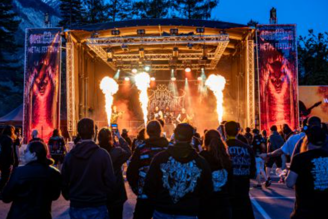
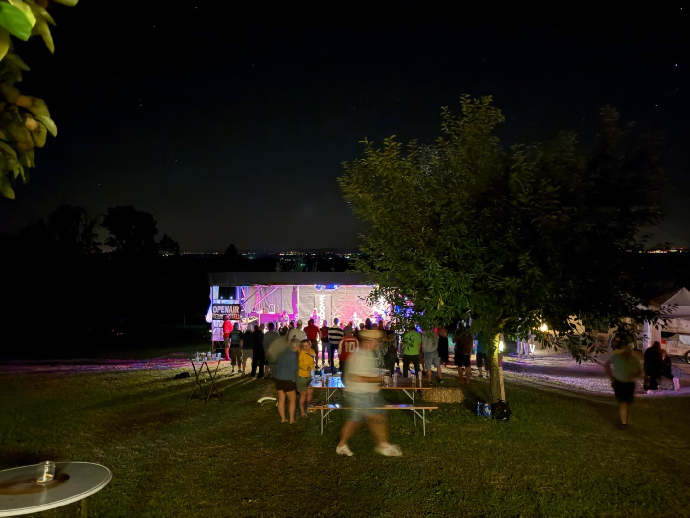
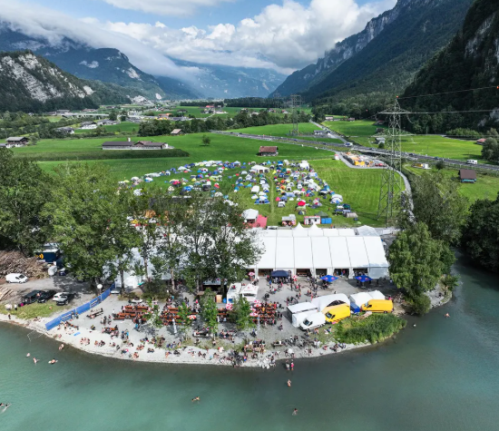
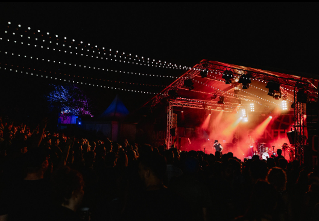
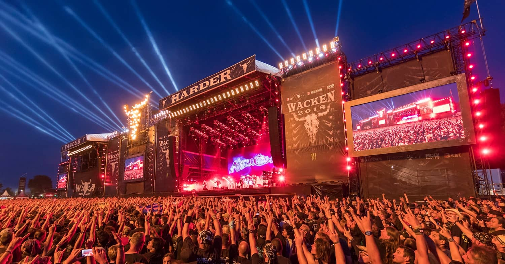
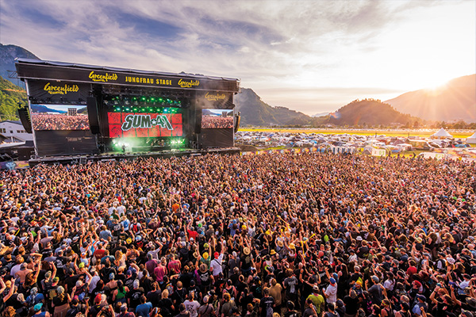
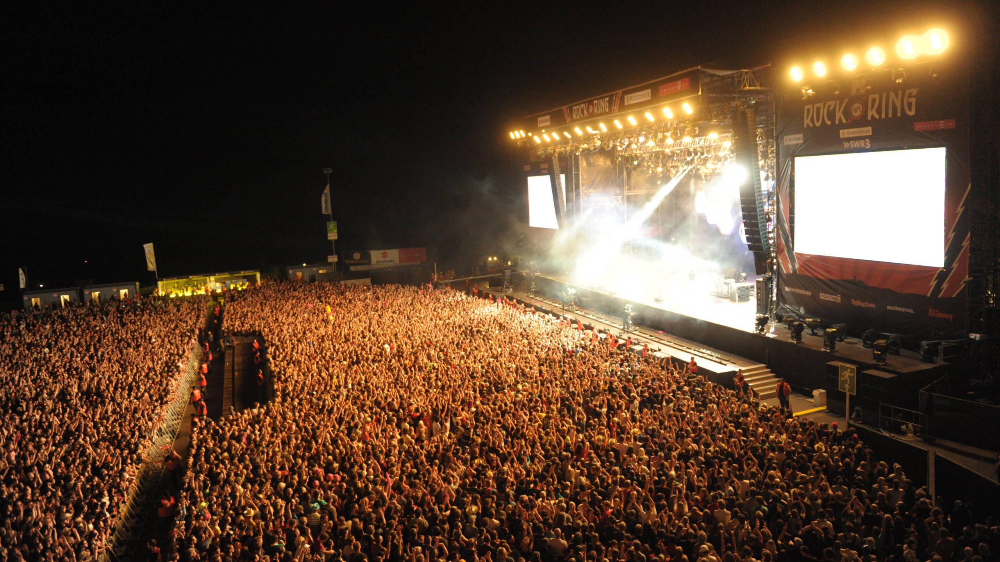
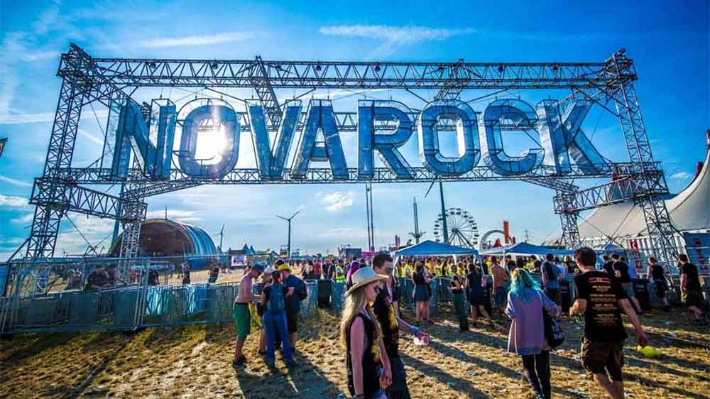
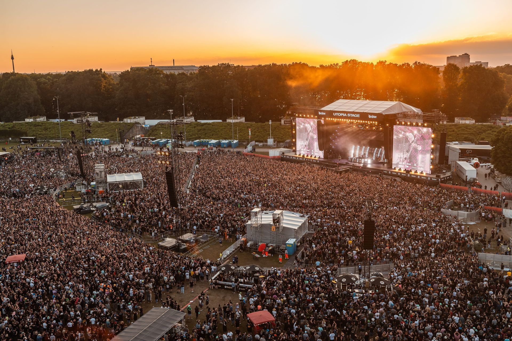

FESTIVALS & EVENTS · 13. NOVEMBER 2026
UPCOMING ROCK FESTIVALS 2027
Neues Jahr, neue Festivals! Wir zeigen dir, welche Rock- und Metal-Festivals du 2027 auf dem Radar haben solltest – von legendären Klassikern bis zu Highlights in der Schweiz.

30. APRIL - 1. MAI 2027 · LIECHTENSTEIN
OHM FESTIVAL
Heavy Metal aus unserer Region! Das OHM Festival bringt Metal-Fans und Bands zusammen und sorgt für ordentlich Stimmung. Ein besonderes Highlight für alle, die die regionale Metal-Szene entdecken und unterstützen möchten.

15.–17. JULI 2027 · BERNHARDZELL, SCHWEIZ
OPEN AIR BERNHARDZELL
Rockmusik und Festivalstimmung in der Ostschweiz! Das Open Air Bernhardzell bietet Live-Musik unter freiem Himmel und ist eine tolle Gelegenheit, regionale Konzerte und die Festivalszene in unserer Umgebung zu entdecken.

29.–31. JULI 2027 · BRIENZ, SCHWEIZ
BRIENZERSEE ROCKFESTIVAL
Rockmusik direkt am wunderschönen Brienzersee! Das Festival verbindet mitreissende Live-Auftritte mit einer einzigartigen Berg- und Seekulisse. Hier treffen Schweizer und internationale Rockbands auf begeisterte Musikfans. Perfekt für alle, die gute Musik und sommerliche Festivalstimmung lieben.

2027 · FESTIVALPAUSE
QUELLROCK OPEN AIR
Rockmusik vor historischer Kulisse! Das Quellrock Open Air in Bad Ragaz gehört zu den traditionsreichen Open-Air-Festivals der Schweiz. Nach der Ausgabe 2026 legt das Festival im Jahr 2027 eine Pause ein. Die Veranstalter möchten die Zeit nutzen, um die Zukunft des Festivals neu zu gestalten. Wir hoffen, dass das Quellrock bald wieder zurückkehrt!

28.–31. JULI 2027 · WACKEN, DEUTSCHLAND
WACKEN OPEN AIR
Eines der bekanntesten Heavy-Metal-Festivals der Welt! Seit über 30 Jahren bringt Wacken internationale Metal-Grössen und Tausende begeisterte Fans zusammen. Ein absolutes Highlight für alle, die harte Gitarrenriffs und eine einzigartige Festivalatmosphäre lieben.

10.–12. JUNI 2027 · INTERLAKEN, SCHWEIZ
GREENFIELD FESTIVAL
Rock, Punk und Metal vor einer beeindruckenden Bergkulisse! Das Greenfield Festival gehört zu den bekanntesten Rockfestivals der Schweiz und begeistert mit internationalen Bands, energiegeladenen Konzerten und einer unverwechselbaren Atmosphäre.

04.–06. JUNI 2027 · NÜRBURGRING, DEUTSCHLAND
ROCK AM RING
Eines der grössten und bekanntesten Rockfestivals Europas! Am Nürburgring erwarten dich drei Tage voller internationaler Top-Acts, mitreissender Live-Auftritte und jeder Menge Festivalenergie. Ein Muss für echte Rockfans!

10.–12. JUNI 2027 · NICKELSDORF, ÖSTERREICH
NOVA ROCK
Das Nova Rock zählt zu den grössten Rock- und Metal-Festivals Österreichs. Auf den Pannonia Fields erwarten dich internationale Bands, spektakuläre Bühnenshows und jede Menge Festivalstimmung. Perfekt für alle, die Rockmusik unter freiem Himmel feiern möchten.

04.–06. JUNI 2027 · NÜRNBERG, DEUTSCHLAND
ROCK IM PARK
Das Schwesterfestival von Rock am Ring! Auch in Nürnberg erwarten dich internationale Rock- und Metal-Acts, eine mitreissende Festivalatmosphäre und unvergessliche Live-Momente. Ein echtes Highlight für Musikfans.
EIN FESTIVAL FÜR DICH DABEI?
Dann schnapp dir deine Crew, sichere dir rechtzeitig Tickets und erlebe 2027 unvergessliche Festivaltage voller lauter Musik, guter Leute und grossartiger Momente!